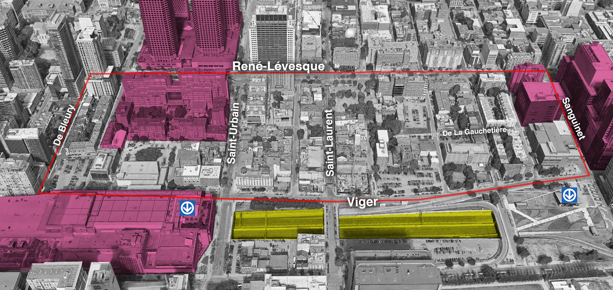

Overview
For this project, the area of focus is Montreal’s Chinatown and its surroundings area. The chosen area of study and its related topic relate to a project I have been involved with, first through URBS 433, and currently, as being extended through an external community project (partially with the Chinatown Working Group).
Here, I want to explore population data, from the perspective of conserving Chinatown’s cultural identity and heritage, in order to document and visualize this notion of Chinatown as an incomplete community. In short, a socio-demographic analysis framed against the lack of services/amenities in the area, which is magnified by increasing development pressure.
Steps would include finding the relevant Census Tracts, aggregate data (income, language, household types, etc.) into a new dataframe, creation a function for visualization/mapping that perhaps is interactive in some ways.
The full project from URBS 433 can be viewed by clicking the RSP link at the top of the page.
Conceptualization of the issue
If Chinatown functions today as an incomplete community, it is largely due to its long history of planning insensitivity and development leniency, which allowed the incremental suppression of essential services and amenities - notably carved out of the urban fabric through several large redevelopment projects (e.g., Complexe Guy-Favreau). This led to the demolition of many housing blocks, local businesses, groceries, parks, and religious buildings - never to be replaced.
In addition, land pressure in Chinatown is currently at its pinnacle, hemming the local community to the point of suffocation. In an environment where every parcel of land is fiercely contested, the planning of provision of services requires immediate attention.
Study Area

Figure 1: Map of Chinatown.
Source: Author

Figure 2: Map of Chinatown, illustrating issues of scale and character.
Source: Resilient Space Project